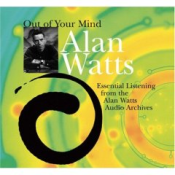

More On Lies
Paul Graham wrote an essay on adults lying to kids. After What You Can't Say, I expected him to write it. It's very much up his alley. So, when I saw the title, I eagerly clicked on the link and started reading... gradually coming to a disappointment. The essay is about lies adults tell kids deliberately. The word "deliberately" makes the subject far less deep than it could have been, because eventually these lies are easy to identify. And once you see a lie, it loses all power over you. For people with an inquisitive mind, the most harm these lies can do are a few difficult years during puberty.
Most people grow out of the little lies parents tell them about sex, death, and cursing. Most intelligent people I know grew out of religious ideals their parents instilled in them. Not in a sense that they teach their children to curse, or that they switched from Judaism to Christianity, but in a sense that they recognized these things as entirely arbitrary. They'll still teach their children not to curse, and they'll go to the synagogue, but they'll do it exactly because they saw through the arbitrary nature of these ideas, and are no longer controlled by them. Once you see that something you do is completely arbitrary, you become free of it, and once you're free there is no value in rebelling against it. There is no conflict in staying religious and recognizing the arbitrary nature of your belief. The corollary of this is that teenagers rebel against their parents precisely because they're still under their parents' control.
Far more dangerous lies are the deeply rooted social beliefs parents unconsciously instill into their children. These lies are dangerous because most people, no matter how intelligent or inquisitive, remain oblivious to them all their lives. This is what I was hoping Paul would write about.
A good example of this is the "flat Earth model". It took thousands of years for a thought that the Earth may not be flat to enter people's minds. Why? This thought should be simple to generate - all you have to do is recognize that the Earth is flat, and negate this notion. Why didn't people do this? The obvious reason is that people didn't know they thought the Earth is flat. Nobody ever explicitly said it was, the idea was completely implicit.
A modern analogy that illustrates this is a famous interview problem: you have a cake with an irregular piece cut out of it, and you have to figure out how to cut the cake into equal pieces. The smarter the person, the harder it is for them so solve this problem. People come up with all sorts of ingenious (and usually incorrect) solutions, when the obvious solution is staring them right in the face - just cut the cake horizontally.
Why can't people just think of how we normally cut cakes and negate the procedure, yielding the correct solution? Mostly, because nobody says "could you cut this cake vertically, please?" The notion that cakes are to be cut vertically is so implicit that we can't see it, and if we can't see something, we can't negate it. If we don't know how we cut our cakes, what other implicit assumptions are we blind to?
The most dangerous lies permeate everything around us. They're so blatantly banal that we can't see them. Depending on the time period, people who discover these lies are either given a Nobel prize or burnt at the stake (which is also a form of flattery).
So what can we do?
The most liberating work I encountered so far is Out of Your Mind lecture series by Alan Watts. The CDs are worth every penny of their price (their cover doesn't do them justice). Of course there are alternative ways of obtaining them (I say this because once you listen to the first lecture you'll immediately be convinced that if Alan were alive he would be absolutely thrilled about the potential the Internet offers, and would be perfectly happy with his work being distributed for free). If you like Paul's work you will love Alan Watts. Their thought processes are two sides of the same coin. (Incidentally, this demonstrates the limitations of modern recommendation systems - Amazon's page for Hackers & Painters does not mention Alan's work, but this is a topic for a different article).
Everyone understands that a conscious, reasoning mind is a great blessing. Unfortunately few people understand the flipside - because of the bounds every thought, conviction, and belief impose on us, a reasoning mind is simultaneously a terrible curse. There is a huge body of knowledge on how to identify the deep rooted assumptions, and how to free ourselves from the very real chains our mind imposes on us. All we have to do is enter the Gateless Gate.
Comments?
If you have any questions, comments, or suggestions, please drop a note at coffeemug@gmail.com. I'll be glad to hear your feedback.